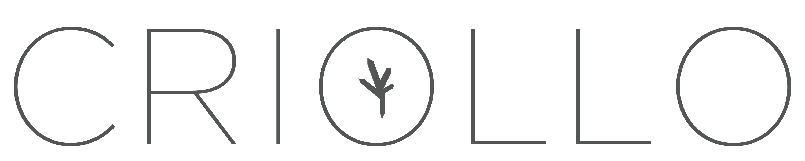
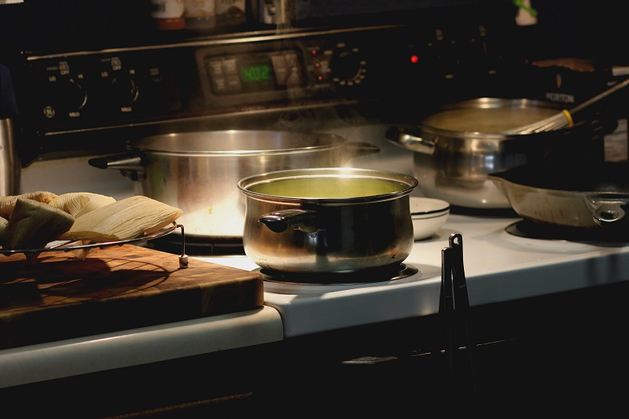
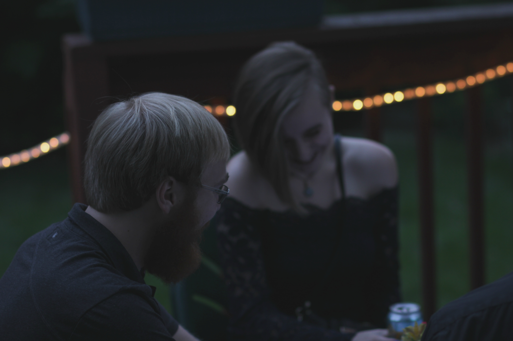
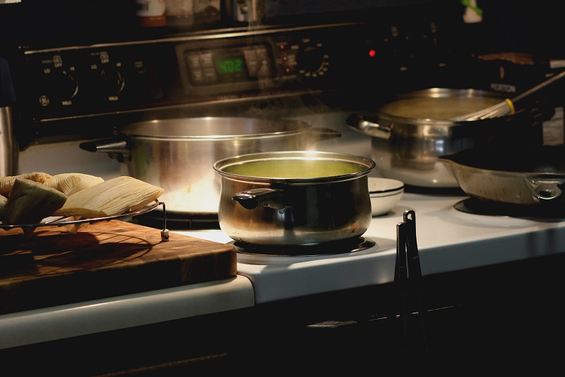
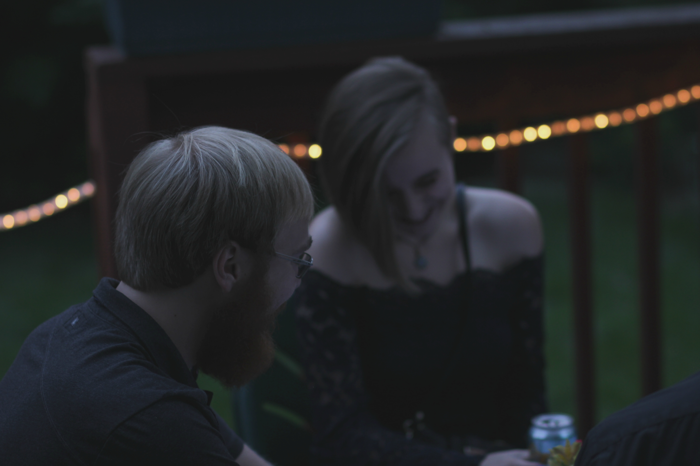

About Us.
We are a bunch of nerds experimenting with food.Acknowledements.
We believe in collaboration and sharing that celebration with others. We credit those who lend a helping hand during our tastings.Tasting #1 | May 2016.
Jordan Ruiz - Chef.
Cindy Vo - Tasting Director.
Tina Ruiz - Host.
& 3 guests.
Tasting #2 | September 2016.
Jordan Ruiz - Chef.
Cindy Vo - Tasting Director.
Tina Ruiz - Host.
& 11 guests.
Tasting #3 | October 2016.
Jordan Ruiz - Chef.
Cindy Vo - Tasting Director.
Danny Lara - Sous chef.
Tina Ruiz - Host.
& 12 guests.
Tasting #4 | December 2016
Jordan Ruiz - Chef.
Cindy Vo - Tasting Director.
Collin Moran - Sous Chef.
Derrick - Assistant.
Tina Ruiz - Host.
& 10 guests.
Tasting #5 | April 2017.
Jordan Ruiz - Chef.
Cindy Vo - Tasting Director.
Tina Ruiz - Host.
& 8 guests.
Tasting #6 | June 2017.
Jordan Ruiz - Chef.
Cindy Vo - Tasting Director.
Jon - Sous Chef.
Whitney - Pastry Chef.
Tina Ruiz - Host.
& 8 guests.
Rules.
This is the fun part.Invitations & Reservations.
- In order to receive an invitation (includes location, date, time, and a rough menu) you must sign up on this site using the form we have set up. These will, usually, be sent out 3 weeks to a month prior to the tasting date.-To confirm your spot at a tasting once invitations are sent out, a $10 deposit is required via Venmo or Paypal. For those close to us, cash is also an option.
- If reservations exceed 12 guests for a tasting, the remaining guests will be waitlisted until a confirmed guest has cancelled. Those who are waitlisted and did not receive a spot will have priority at our next tasting.
-We do have an option for one guest to reserve spots for up to 3 other guests. Details can be seen in the form during sign up.
Cancellations.
-Cancellations do happen, and we have a few extra rules for it.-Cancellations made 2 days before the tasting date will have their deposit refunded and their spot given to another guest. (To be more specific, the cancellation window without penalty is 2 days from the day of the tasting, not the time. That means, if a tasting is on the 6th at 7pm, starting midnight on the 4th is considered to be wthin the 2 day window.)
-Cancellations made within the 2 days will not get their deposit refunded.
-We strive to accumulate as little waste as possible, and we portion dishes to the number of confirmed guests as perfectly as possible. Therefore, we have a strict banning policy for guests that cancel within the 2 day window perpetually.
-For 2 last minute cancellations, you will be banned from the next 3 tastings.
-For 3 last minute cancellations, you will be banned from the next 6 tastings.
-For 4 last minute cancellations, you will be permanently banned from paricipating in another tasting.
Donations.
-We do not charge guests a flat rate, or a "restuarant" rate to come to our tastings.-We do use the honor system, and allow guests to determine the amount they believe we deserve.
-As suggested by those who have participated in past tastings, we will give suggestions that will cover our food cost. This will be sent out to guests via email when we determine the final version of the menu.
General info.
-Attire is considered "casually elegant". We'll let you decide what that means.-There will be an option on the form to check off "booze" if you decide to bring a form of it to the tasting. Booze is not considered a donation and can not be used as a discount. This is purely for guests wanting to bring something to pair with our menu if they'd like to.
-Parking is generally suburban/street parking.
-We do accomadate those with dietary allergies and preferences, and have a section of the form that allows for guests to tell us.
-Guests will need to consent to being photographed at the tastings during sign up. These will mostly be used for us to figure out seating and decorations for the next tasting. They may also be used on our site, though we try very hard not to pick photos with a singular guest, or photos with clear faces. If there comes a time where demand for a social media account is desired, we will use photographs that are consented under a new policy and not the policy we have in place right now.
Reservations & Contact.
For general inquiries, please email us at: blah@gmail.comTo reserve a spot, please fill out the form below.
Portfolio.


 


